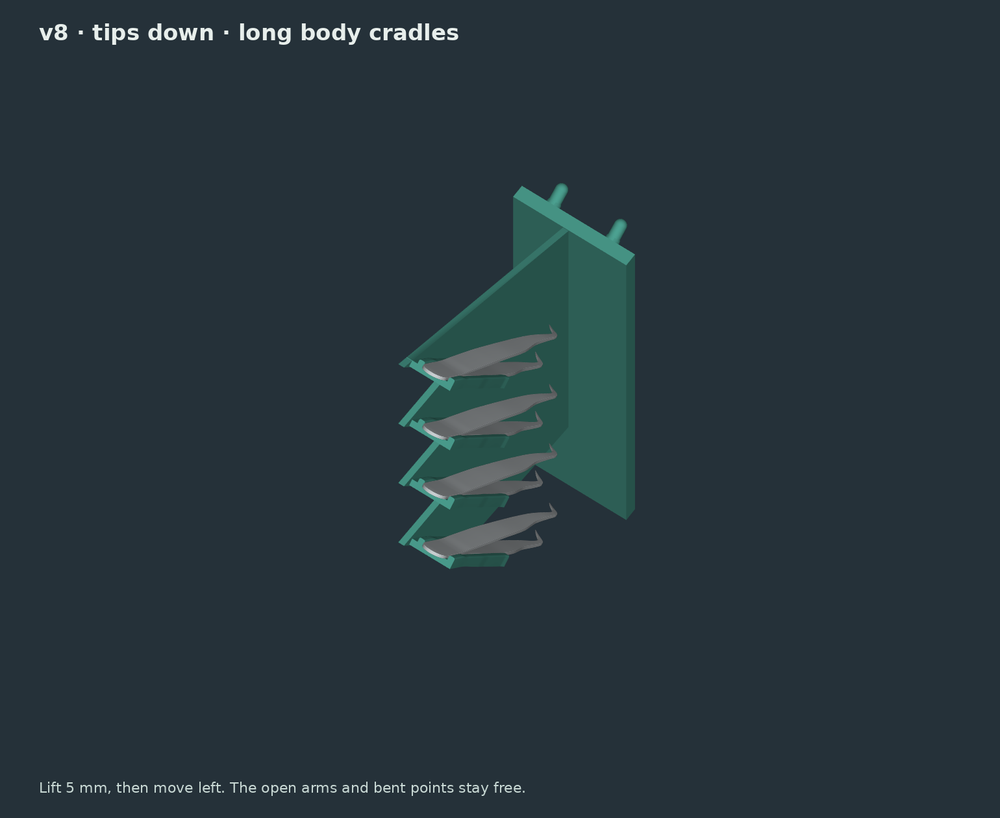
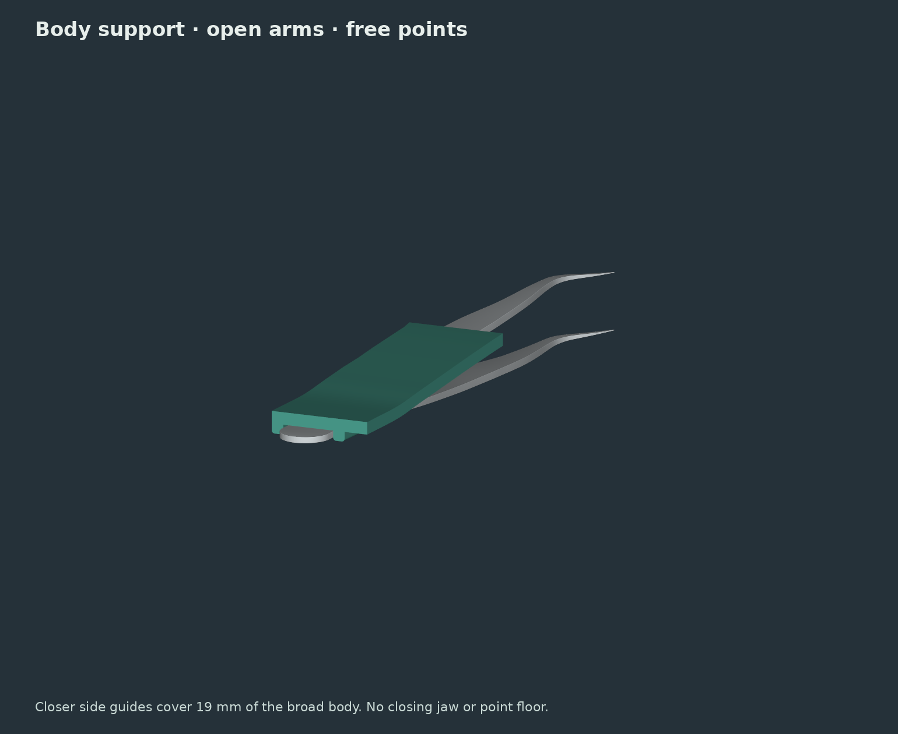
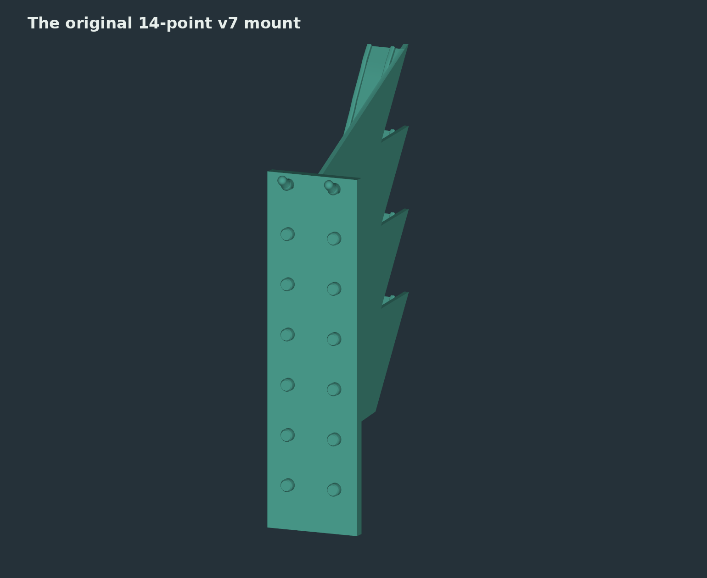
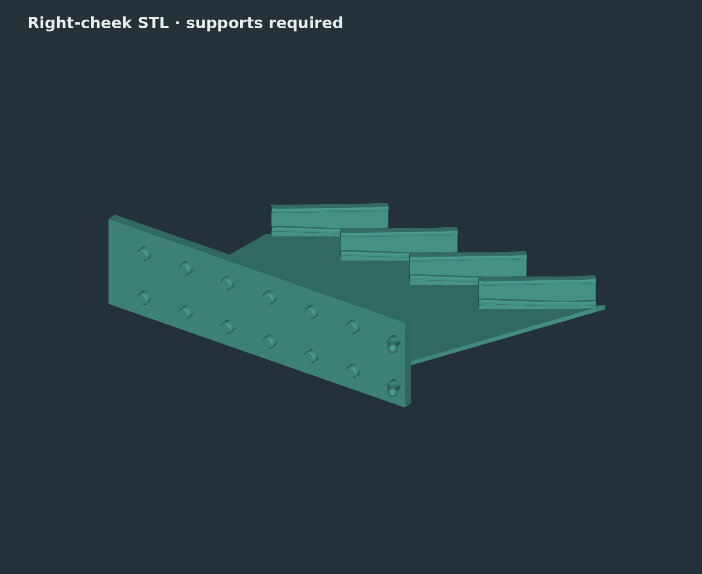
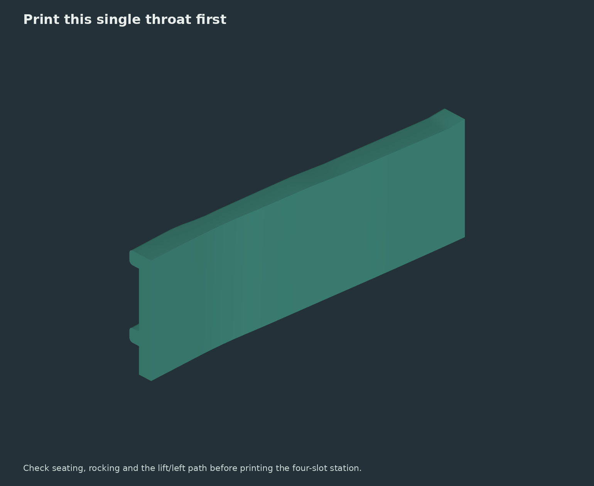

New development build: v10 · compact layout and a solid right cheek
v8 · four slots · original 14-point mount · measured bent tweezer
Tips down. A longer, steadier throat.
The new throat follows the broad upper body over 58 mm. Low side rails locate its edges, with closer guidance over 19 mm. The lower broad face carries the tool; the upper arm stays free. There is no opposed jaw to squeeze the arms closed, and no floor beneath the points.
Hold the rear end, lift 5 mm, then move left. Insert along the reverse path. The tweezer stays tips down throughout; no flipping.

Print the single throat first
The small test piece has the exact throat without the mounting frame. Check seating, side play and the lift-and-left motion with your actual tweezer before printing the full station.
Prototype fit. The closer side allowance is 0.08 mm per edge; the aft and lower-face allowances are 0.35 mm. The reconstructed outline and opening have uncertainty. Test the coupon, clear support and burrs, and adjust the source if the fit needs it. All four slots currently repeat this one measured tweezer; other tools need their own fit check.
Inspect the actual model

Body support and rounded low rails. The working end extends beyond the throat.

The v7 receiver and all 14 mounting points are unchanged.
Dimensions and print review
| Mounting width | 48.8 mm · two grid cells · 25.4 mm pitch |
|---|---|
| Installed part | 48.8 × 116.98 × 227 mm · reaches farther forward and higher than v7 |
| Tool spacing and tilt | 42 mm between slots · original 40° incline |
| Measured tweezer | 122.76 mm long; total aft thickness 1.17 → 1.31 mm |
| Support and guides | 58 mm body contour · 19 mm closer lateral guides · 2.4 mm walls |
| Right-cheek print bounds | 227 × 116.98 × 48.8 mm |
The full STL sliced successfully in OrcaSlicer 2.4.2 using a P1S 0.4 mm geometry review: 0.20 mm process, three walls, 15% infill, normal supports from the plate and a 5 mm brim. The review estimated 3 h 31 min and 135 g including supports. Re-slice with your intended plate and filament settings.
Print face and test-piece previews


CAD and STL checks pass. The nominal open-pose lift-and-left paths clear the holder and neighboring tweezers; the point region has at least 3.02 mm clearance at rest. These geometry checks do not establish physical fit, spring behavior or wear. The original interference mount still relies on board/plastic compliance.
Dimensions and check results · Build and fit notes · Previous v7 station · v9 in development · Editable source in the repo